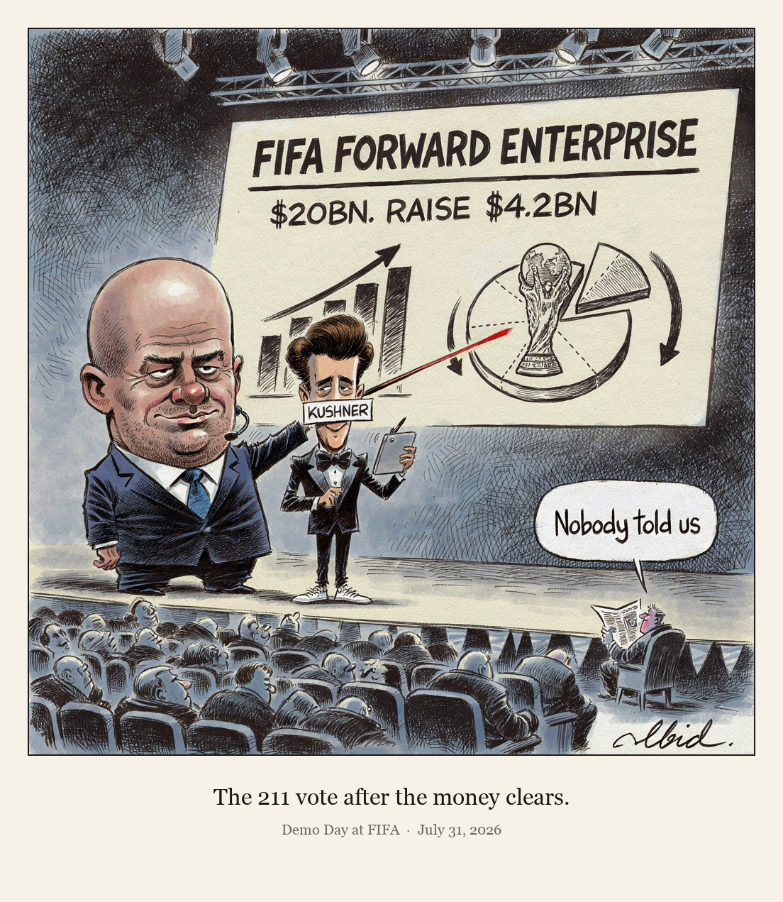

Demo Day at FIFA

FIFA has announced plans to sell minority stakes in future World Cups and other events through a $20bn subsidiary, FIFA Forward Enterprise, seeking to raise up to $4.2bn from an investor group led by Thrive Eternal, a vehicle founded by Joshua Kushner. UEFA condemned the proposal and floated a boycott, while CONCACAF said it had not been informed; any change requires a vote of FIFA's 211 member associations.